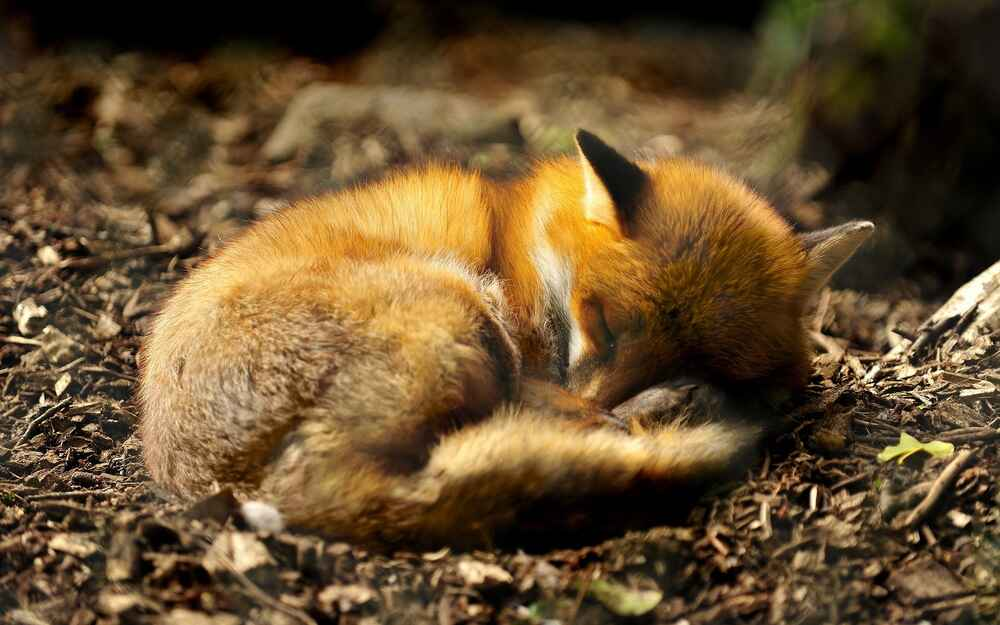
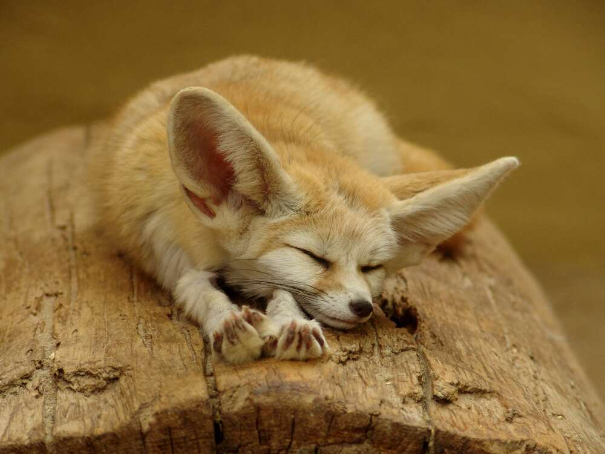

Home
is where the fox is
Who are we?
Fennec and Friends Fox Sanctuary is a dedicated haven for fennec foxes and other fox species in need of rescue, rehabilitation, and care. Our mission is to provide a safe, nurturing environment where these extraordinary creatures can thrive, while promoting education about their natural habitats, behaviors, and the challenges they face in the wild. Through our conservation efforts, we aim to raise awareness about the importance of protecting foxes and their ecosystems, fostering a deeper connection between humans and wildlife. At Fennec and Friends, we believe in giving foxes the second chance they deserve.
What is our story?
The story of Fennec and Friends Fox Sanctuary began with one woman's deep passion for wildlife and a profound love for foxes, particularly the adorable fennec fox. Roxanne Dunham's small effort to rescue and care for injured and displaced foxes slowly but surely grew into a full-fledged sanctuary. After witnessing firsthand the threats these animals face—from habitat loss to the fur farming—we knew we had to do more. With a team of like-minded individuals, we built a safe haven where foxes could recover and live peacefully. Now, our sanctuary is a place not only of healing for foxes but also of education and conservation, spreading the message of protection for these remarkable creatures.